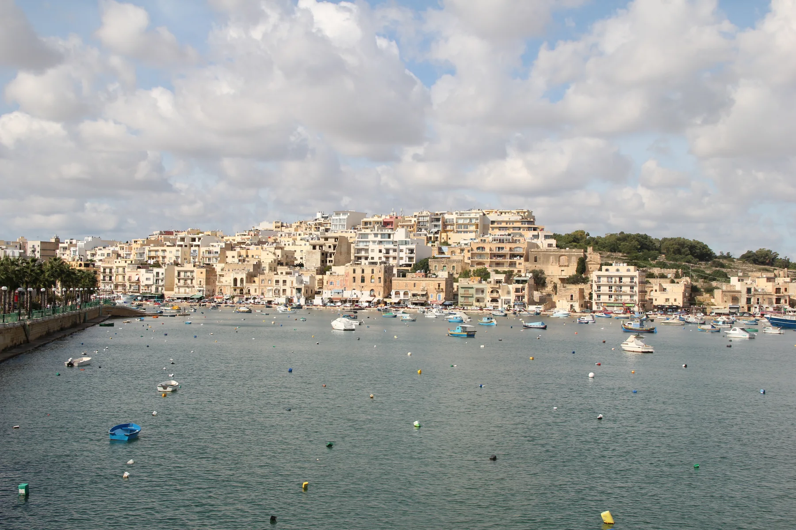

Check the actual frontage, bedroom orientation, loading access and evening conditions. A harbour postcode does not establish a harbour view.
MARSASKALA · READ THE BAY
Harbour first. Then the exact street.
Separate the central bay and promenade, the residential streets behind them, St Thomas Bay and the Żonqor side before comparing homes.

ONE LOCALITY, DIFFERENT CONTEXTS
A harbour address is only the beginning.
The Address Registrar confirms Marsaskala as its own Southern Region locality. Within it, the council separately names St Thomas Bay and several Żonqor coastal sites, so an exact street and entrance matter more than the town label alone.
Confirm gradients, crossings, shade, grocery access and the route back uphill from the exact building rather than from a generic centre pin.
St Thomas Bay and the Żonqor side are separate orientation contexts. Visual proximity is not proof of a convenient or continuous walking route.
Useful context, never a property promise.
The licensed 2012 photograph shows the bay, promenade and rising residential fabric. It does not prove today's appearance, water quality, parking, noise, access or a view from a listing.
Marsaskala Local Council ↗Several bays need separate checks.
The council lists St Thomas Bay, Wara ż-Żonqor Bay, Żonqor Bay and Blue Hole (Żonqor) separately. Treat them as orientation cues and check current access and conditions with the competent authority.
Council beaches page ↗OPERATOR-VERIFIED EXAMPLES
Everyday anchors around the locality.
These examples establish practical context. They are not rankings and do not claim that a branch or venue is closest to every Marsaskala home. Check current access, hours, stock and prices directly.
MySupermarket
The operator lists its Marsascala supermarket at Triq il-Qaliet. The exact route still depends on the property entrance.
Operator locations ↗MyConvenience
The operator also lists a branch at Triq Sant' Antnin, Wied il-Għajn. Store details remain mutable.
Operator locations ↗EUROSPAR
SPAR Malta identifies EUROSPAR Marsaskala at Triq in-Nadur. This is a sourced example, not a nearest-store claim.
SPAR store locator ↗Roti
The operator gives its Marsascala address at Triq ix-Xatt, corner with Triq Sant' Antnin, and describes its Indian-food offer.
Roti operator page ↗No line across the bay.
This edition draws no locality boundary, waterfront shortcut, ferry line or walking route. Walking geometry, bus timetables, current car traffic and taxi-price observations are separate sources and require the exact origin, destination, mode and observation time.
Open the wider Marsaskala map only when you need it.
The overview includes the central harbour, inland streets, St Thomas Bay and the Żonqor side. It deliberately draws no district boundary, route or journey time and loads from OpenStreetMap only after your click.
Marsaskala Local Council · Council beaches page · Office of the Address Registrar · Primary HealthCare community clinics · The Convenience Shop locations · SPAR Malta · Roti
Primary HealthCare currently publishes conflicting health-centre catchment information for Marsaskala/Marsascala, so this edition names the verified community clinic but does not assign a health centre. No ranking, fixed opening hours, property-specific route, accessibility promise, guaranteed view, parking claim or locality-wide journey time is claimed.